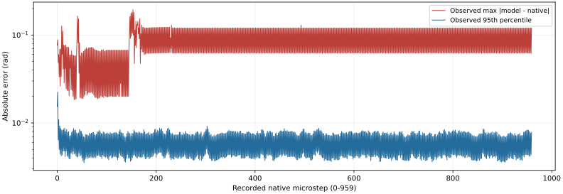
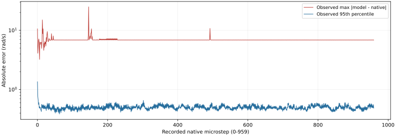

真实轨迹中的模型误差
已完成误差测量；安全和任务验收仍未通过。观测最大值不能作为未来安全上界。
32复用已有完整原生窗口
0本分析新增原生窗口
30,720唯一物理步×状态样本
8复用相同数据的模型变体
误差意味着什么
每个控制周期都重置到真实原生 q/qd，以当时实际执行的同一个74维目标预测两个物理步，再与原生记录比较。480周期×32状态、每周期两步，全部样本保留。模型参数没有拟合。八种变体复用相同数据，不算八批新实验。
基线最大位置误差 0.193548 rad，最大速度误差 24.892687 rad/s。记录零力的代理分层仍出现 0.081290 rad 的位置误差；零力记录不能证明接触、约束冲量或隐藏历史不存在。
这是逐控制周期重置后的两步误差测量，尚未得到连续36步误差上界。接触力上界、实际驱动力矩、终端安全集合、全局模型误差界仍为 UNKNOWN。记录的控制输入力与投影约束力没有被认作独立测得的隐式驱动力矩。
全部960物理步的观测误差
每一步的最大值与95百分位均在32状态×74坐标中直接计算；对数纵轴同时显示常见误差和尖峰。每两步之后重新从实测状态开始预测，不能把图当作自由滚动预测结果。


960步完整绘图数据 CSV
两个已保留的原生反例
状态18、第12微步：实际关节位置 -0.001607122 rad，越过下硬限位；七个隐式模型变体仍预测正值 0.007788965–0.007857636 rad，没有检出该原生违规。显式诊断变体预测约1.851 rad，越过上限，不能视作修复。
状态19、第13微步：原生接触标量 9.281611 N；现有模型没有预测或约束这个接触力。
状态18原图、原生关节与物理曲线 · 状态19原图与接触记录 · 反例分层原始报告
八种模型变体
每种变体完整的960×32×74位置和速度误差数组均按原字节提供。显式变体只是失败诊断，不能选作安全模型。
基线位置 RMSE 0.00430935 rad；最大误差 0.193548 rad。
基线全部74原生坐标
以下是全部32状态、960微步的每坐标统计；完整分层 CSV 同时保留八变体、不同分层和子步。
完整74维分层原始 CSV
验收边界与来源
分析复用首批32组已闭合候选子任务（原生 exit0）。其原总监督后来因SSD空间门槛退出1；原报告捕获时的 pending 状态及最终失败收据均原样保留。CPU误差分析40项测试和真实等待返回0，父进程重读190份材料的内容已闭合。未声称另一个独立 Astra 复算已完成。
旧窗口没有实际暂停命令；报告中的对应时间分层只按索引分段，不能算暂停恢复验收。正式独立留出仍为0。强相机V7和新74维机制的真实独立验收另行进行，旧原图不被重新命名为充分网格覆盖。
下一阶段须闭合模型与原生状态/接触差异、任务跟踪与暂停恢复、充分相机和全手随机覆盖。物理阈值、增益、延迟和碰撞规则保持原注册。
所有原件 SHA 和来源清单 · 本页面数值与作用范围 · 原始完整测量报告
全部原件、源代码、真实等待和保留失败收据（54份）
- FIRST32_PAIR_PUBLIC_DELIVERY_CLOSURE_V1.json 4,617 bytes
- NATIVE_CALIBRATION_PARENT_CONTENT_CHECK_V1.json 2,266 bytes
- astra/native_calibration/HANDOFF_V2.txt 4,508 bytes
- astra/native_calibration/NATIVE_CALIBRATION_DELIVERY_V2.json 81,876 bytes
- astra/native_calibration/NATIVE_GETTER_PROVENANCE_V2.json 468,094 bytes
- astra/native_calibration/READ_ME_V1.txt 5,308 bytes
- astra/native_calibration/SCOPED_CODE_REVIEW_V2.json 3,260 bytes
- astra/native_calibration/close_reviewed_native_calibration_v2.py 15,095 bytes
- astra/native_calibration/complete_native_calibration_delivery_v1.py 4,866 bytes
- astra/native_calibration/first_candidate480_attempt01.log 2,618 bytes
- astra/native_calibration/first_candidate480_attempt01_actual_wait.json 1,678 bytes
- astra/native_calibration/first_candidate480x32_v2/FULL480_NATIVE_CALIBRATION_REPORT_V2.json 84,526 bytes
- astra/native_calibration/first_candidate480x32_v2/actual_native_shared_arrays.npz 23,483,780 bytes
- astra/native_calibration/first_candidate480x32_v2/explicit_saturated_diagnostic_errors74.npz 34,979,411 bytes
- astra/native_calibration/first_candidate480x32_v2/frozen493_before_after.json 204,021 bytes
- astra/native_calibration/first_candidate480x32_v2/implicit_add_armature_errors74.npz 33,411,392 bytes
- astra/native_calibration/first_candidate480x32_v2/implicit_gravity_off_errors74.npz 33,474,576 bytes
- astra/native_calibration/first_candidate480x32_v2/implicit_initial_bias_errors74.npz 33,490,842 bytes
- astra/native_calibration/first_candidate480x32_v2/implicit_initial_mass_errors74.npz 33,417,051 bytes
- astra/native_calibration/first_candidate480x32_v2/implicit_mass_as_recorded_errors74.npz 33,416,982 bytes
- astra/native_calibration/first_candidate480x32_v2/implicit_native_tick_errors74.npz 33,410,721 bytes
- astra/native_calibration/first_candidate480x32_v2/implicit_no_coriolis_errors74.npz 33,412,253 bytes
- astra/native_calibration/first_candidate480x32_v2/input_source_sha256.json 53,398 bytes
- astra/native_calibration/first_candidate480x32_v2/known_witness_stratification_v2.json 74,572 bytes
- astra/native_calibration/first_candidate480x32_v2/output_sha256.json 3,445 bytes
- astra/native_calibration/first_candidate480x32_v2/per74_stratified_error_summary.csv 6,949,446 bytes
- astra/native_calibration/first_candidate480x32_v2/per_lane_variant_errors.json 137,211 bytes
- astra/native_calibration/full480_positive_negative_tests_v2.json 251 bytes
- astra/native_calibration/full480_tests_attempt01.log 6,029 bytes
- astra/native_calibration/full480_tests_attempt01_actual_wait.json 1,667 bytes
- astra/native_calibration/native_calibration_strata_v2.py 2,836 bytes
- astra/native_calibration/native_teacherforced_cpu_v1.py 10,373 bytes
- astra/native_calibration/positive_negative_attempt01.log 3,770 bytes
- astra/native_calibration/positive_negative_attempt01_actual_wait.json 1,686 bytes
- astra/native_calibration/positive_negative_tests_v1.json 451 bytes
- astra/native_calibration/reviewed_delivery_v2_attempt01.log 350 bytes
- astra/native_calibration/reviewed_delivery_v2_attempt01_actual_wait.json 1,682 bytes
- astra/native_calibration/run_full480_native_calibration_v2.py 21,830 bytes
- astra/native_calibration/run_native_calibration_v1.py 22,644 bytes
- astra/native_calibration/run_owned_cpu_wait_v1.py 3,039 bytes
- astra/native_calibration/test_full480_calibration_v2.py 8,158 bytes
- astra/native_calibration/test_native_teacherforced_cpu_v1.py 15,154 bytes
- astra/native_calibration/two_witness_attempt01.log 1,308 bytes
- astra/native_calibration/two_witness_attempt01_actual_wait.json 1,697 bytes
- astra/native_calibration/two_witness_v1/calibration_report.json 73,137 bytes
- astra/native_calibration/two_witness_v1/frozen493_before_after.json 204,021 bytes
- astra/native_calibration/two_witness_v1/input_source_sha256.json 10,398 bytes
- astra/native_calibration/two_witness_v1/known_witness_report.json 17,598 bytes
- astra/native_calibration/two_witness_v1/output_sha256.json 1,471 bytes
- astra/native_calibration/two_witness_v1/per74_error_summary.csv 986,145 bytes
- astra/native_calibration/two_witness_v1/per74_micro_errors.csv 3,892,811 bytes
- astra/native_calibration/two_witness_v1/two_witness_arrays.npz 757,708 bytes
- shard_full_verified_supervisor_v1_execution.json 572 bytes
- verified_shard_verified_v1_execution.json 647,472 bytes